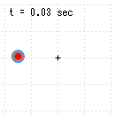
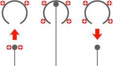
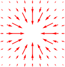
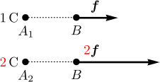
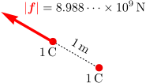
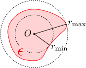
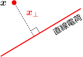
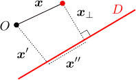
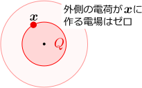

1.静止した電荷に働く力

この章のシミュレーション（クリックで計算開始）：
クーロン力が知りたい
力には、力学編で出てきた重力や拘束力以外に、電磁気的な力も存在する。例えば、服で擦った下敷きは静電気を帯び、紙片を吸い付ける。この時に働いている力をクーロン力という（第3章で見るように、静電気を帯びた物体に働く力として、もう1つローレンツ力と呼ばれるものがある）。
求めたいのは、クーロン力
実際にクーロン力を測定するにあたって、下敷きと紙片では扱いづらいので、静電気を溜める方法を考えることから始めるのがよいだろう。その後、最も単純と考えられる、大きさが無視できる物体間に働くクーロン力を与え、大きさが無視できない場合の議論につなげるのがよいだろう。そこでこの章では、以下の4節に分けて議論を行う：
電 荷 を 溜 め る 点 電 荷 か ら 受 け る ク ー ロ ン 力 密 度 分 布 の あ る 電 荷 か ら 受 け る ク ー ロ ン 力 例 題 ： ク ー ロ ン 力 の 計 算
1.1電荷を溜める：ヴァンデグラフ起電機
典型的なクーロン力は、上述のように服で擦った下敷きなのだが、それでは理論的に扱いづらいので、まず、静電気を溜める方法の1つであるヴァンデグラフ起電機について述べる。
電荷には正と負がある
静電気を帯びることを「帯電する」といい、その静電気の量を電荷という（どのように電荷を定量化するかは1.2節で述べる）。電荷には2種類あり、同種の電荷を持つ物体同士は反発しあい、逆に、異種であれば引き合うことが知られている。これら2種類の電荷に便宜的に符号をつけて、正の電荷、負の電荷と呼んで区別する。符号の取り方は、毛皮と塩化ビニールを擦り合わせたときに、毛皮が帯びる電荷が正、塩化ビニールが負となる。毛皮同士や塩化ビニール同士は、同符号なので反発し合い、逆に、毛皮と塩化ビニールは引き合う。
歴史的には、琥珀と毛皮を擦り合わせた時、琥珀が持っていた正の電気を毛皮に与えると考えられたため、琥珀が負で毛皮が正に帯電するように定義された。（電気の英語名electricityの由来は、琥珀を表すギリシャ語イレクトロンである。）しかし、実際には、琥珀は電気を与える側ではなく、電子と呼ばれる電荷を受け取る側であることが後に明らかになった。そのため、電子の電荷は負となった。
ファラデーのアイスペール実験

電荷を蓄える手段が欲しいのだが、そのために着目するのは、ファラデーのアイスペール実験（Faraday's ice pail experiment）と呼ばれる実験である。この実験によると、右図のように、金属球の内部に帯電した物体を触れさせると、その電荷が金属球に奪われることが知られている（全体が覆われていれば球形でなくてもよい）。なお、アイスペールとは、氷を入れて保つための（金属製の）卓上容器である。
特にこの性質は、金属球側が帯電しているかどうかとは無関係である。金属球が帯電してくるにつれて、それ以上電荷を受け取らなくなりそうな気がするが、そうではないのである（もちろん限界はあるが）。
ヴァンデグラフ起電機
従って、帯電した物体をたくさん用意しておくなどし、それらの電荷を次々に金属球に移していけば、大量の電荷を金属球に蓄えることができる。このような装置を、ヴァンデグラフ起電機という。
1.2点電荷から受けるクーロン力
この節では、2つの点電荷（＝大きさが無視できる帯電した物体）の間に働くクーロン力の公式であるクーロンの法則(
点電荷同士に働く力は、逆2乗則に従う：式(
まず、帯電させた小さな物体

そのような実験を行った結果、以下のことが知られている。即ち、原点にソース点電荷
電荷の定量化

電荷の定量化は、クーロン力に比例するように行えばよいだろう（質量の定量化が重力に比例するようにできたのと同じことを期待している）。まず、基準となる適当な点電荷

基準となる
クーロンの法則：式(
以上の定量化のもとで、原点に
式(
1.3密度分布のある電荷から受けるクーロン力
この節では、密度分布
複数の点電荷から受けるクーロン力：式(
複数のソース点電荷があり、位置と電荷がそれぞれ
なお、クーロン力の加法性は、上記の電荷の定量化とも相性がよい。例えば、電荷が
電場
式(
点
電荷密度
電荷が連続的に分布している場合には、力学の15.3節のように、電荷を持った物体を非常に小さな体積要素に分割し、各体積要素からの寄与を足し合わせることにより、区分求積によって計算することができる。要は、(
なお、
式(
ところで、式(
【1.3-注1】広義積分
3次元領域
証明

積分が定義できないのは原点付近だけなので、
上の証明を、分母の次数を変えてたどれば分かるように、積分が収束するのは、分母の次数が
1.4例題：クーロン力の計算
この節では、電荷密度
【1.4-注1】直線電荷の周りの電場

無限に伸びた直線電荷の周りの電場
導出

電荷が作る直線を
変 数 変 換 ： 緑 字 部 分 を 含 む 項 は 奇 関 数 な の で 消 え る で の 積 分 に 引 き 戻 し ： た だ し は と 平 行 な 単 位 ベ ク ト ル
【1.4-注2】平面電荷の周りの電場
無限に広がった平面電荷がの周りの電場
導出
【1.4-注3】球対称な電荷の周りの電場

原点の周りに球対称な電荷密度
導出

極座標をとって
方 向 を 軸 と す る 極 座 標 を と る 。 積 分 を 実 行 。 （ 青 字 部 分 は に 依 存 し な い こ と に 注 意 。 ） （ を 積 分 す る と 、 と 平 行 に な る こ と に 注 意 。 ） こ れ を 用 い て 積 分 を 実 行 。